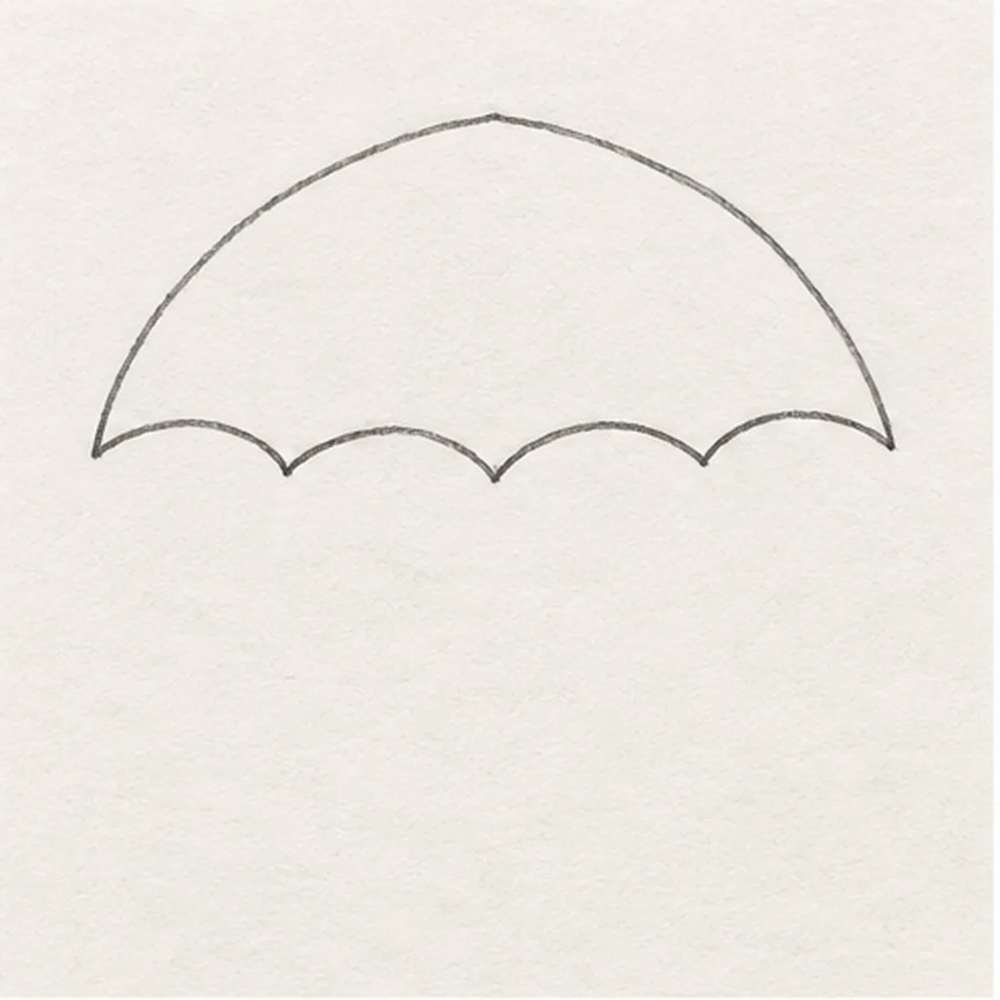
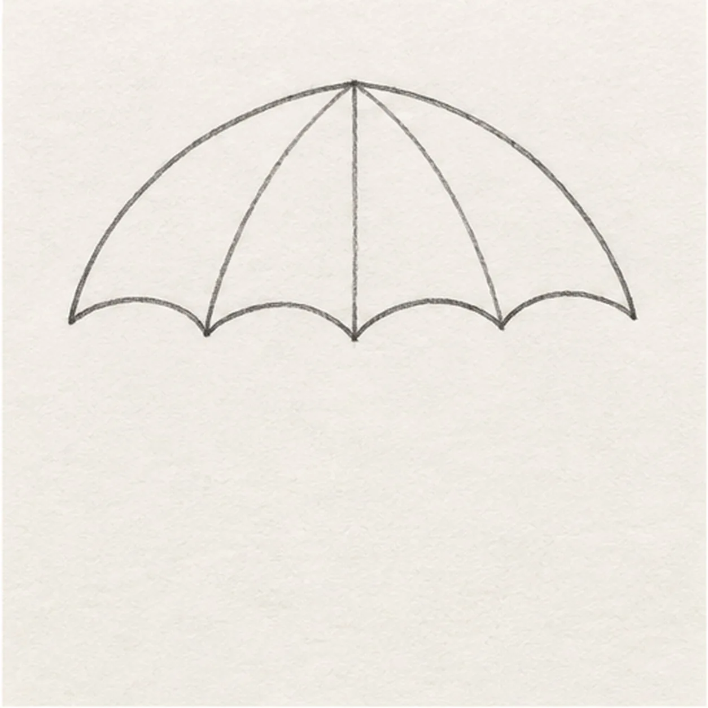
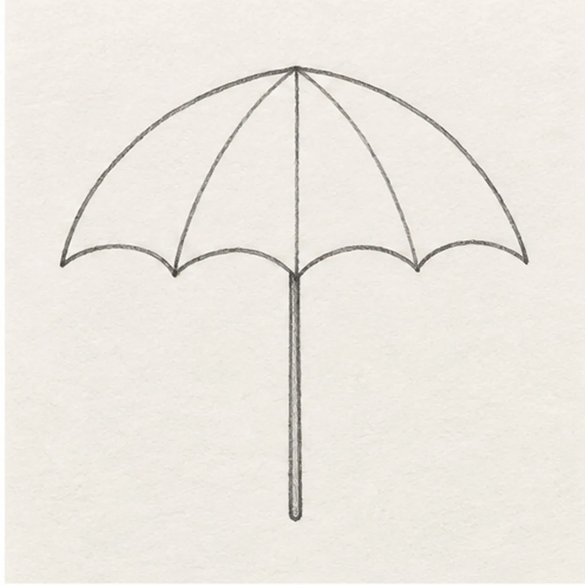
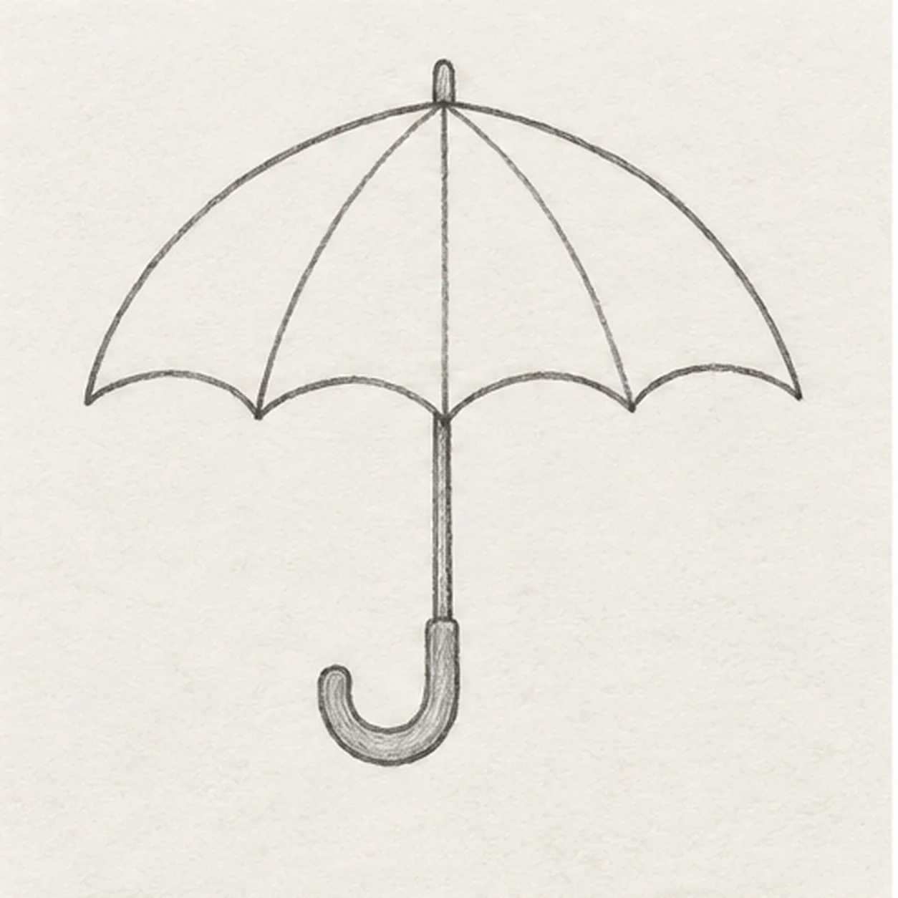
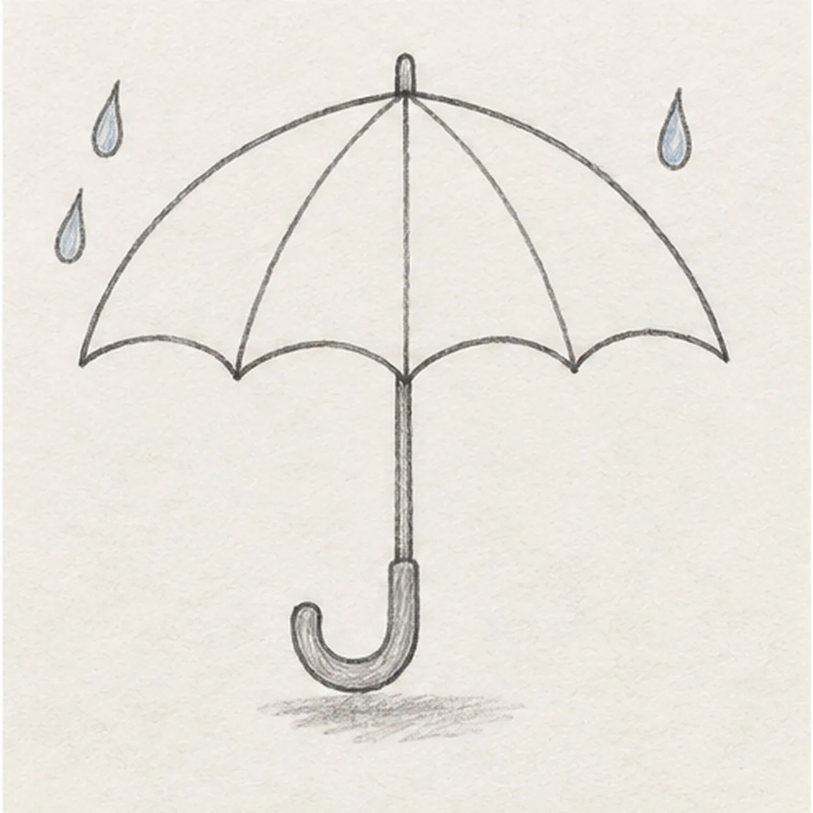

From the archive
Let's draw an open umbrella
Treat this as one small practice round: build the subject lightly, notice the shapes, then darken only the lines that help the finished sketch.
-
01

Shape the canopy
Draw a wide, shallow dome, then close its lower edge with four gentle scallops. Keep the top center and the three scallop joins clear.
Sketch tip: Keep the four scallops broad and count the three joins before closing the edge.
-
02

Place the canopy seams
From the fixed top center, draw three light ribs down to the three joins between the four scallops. Keep the outside edge unchanged.
Sketch tip: All three ribs begin at the same crown point; stop each one at a scallop join.
-
03

Drop the center shaft
From beneath the top center, draw a thin straight shaft down through the middle scallop to a point well below the canopy. Leave its rounded lower endpoint ready for the hook to overlap.
Sketch tip: Use the middle join as a plumb line so the shaft does not drift to one side.
-
04

Curl the wooden handle
Wrap the J-shaped wooden hook over the shaft’s lower endpoint, curling left and upward. Add a short ferrule above the same canopy center.
Sketch tip: The hook grows from the same shaft endpoint. Keep its curl open enough to see through.
-
05

Add rain and a shadow
Draw two pale-blue raindrops to the left of the canopy and one to the right. Sketch one broken graphite shadow directly under the hook.
Sketch tip: Place each drop clear of the canopy so the rain does not hide a rib.
-
06
Shade the open umbrella
Shade the canopy in muted red and gold bands: red on both narrow outer edges and the left center section, gold in the remaining spaces. Color the hook brown, preserve the three pale-blue drops, and deepen selected ribs and shadow without new contours.
Sketch tip: Use the side of each pencil for the soft canopy bands and leave the three earlier drops where they are.